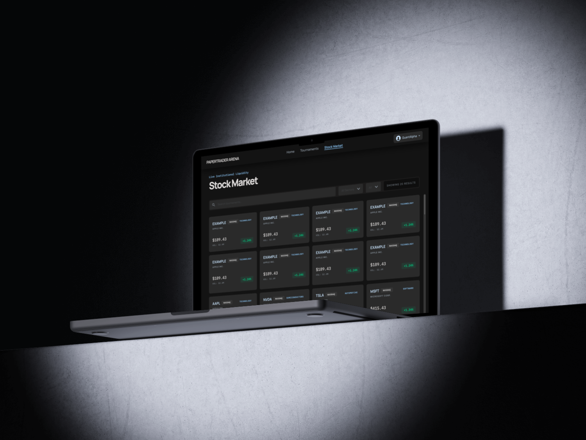
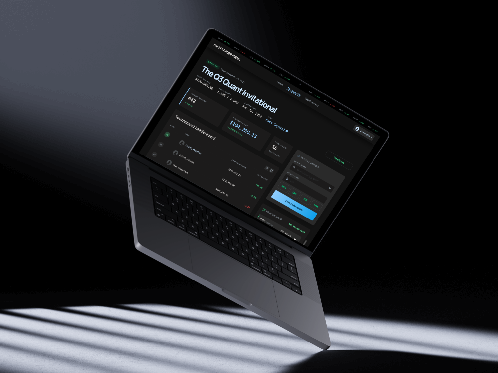

Overview: Paper Trader Arena is an interactive trading simulation platform designed to help users practice stock trading in a low-risk, gamified environment. The project focuses on creating an engaging experience where users can join trading tournaments, monitor stocks, manage their portfolio, and make buy/sell decisions without using real money.
The goal of this project was to combine front-end development, UI design, and user-centered interaction flows into a polished digital product. Through this project, I explored how to make complex financial information feel more approachable, visual, and engaging for beginner users while still maintaining the structure and clarity expected from a trading platform.
Paper Trader Arena turns stock trading into a competitive, beginner-friendly simulation. Users join tournaments, browse the stock market, build a personalized watchlist, and execute paper trades against live-style market data while climbing the leaderboard.
Explore the screens below to see the trading flow, watchlist, and tournament dashboard in action.
UI Designer & Front-End Developer
4 weeks
Many beginner users find trading platforms overwhelming because they often present dense financial data, unfamiliar terminology, and multiple decision points at once. For users with little trading experience, this can make even simple actions, such as choosing a stock or placing a trade, feel intimidating.
Paper Trader Arena aims to simplify the trading experience by turning it into a more visual, interactive, and game-like environment. The challenge was to design an interface that felt informative but approachable, allowing users to understand market information, tournament progress, and trading actions without being overloaded by complexity.
The visual direction was inspired by modern fintech interfaces such as Wealthsimple, combined with a liquid glass aesthetic seen in contemporary UI design references. I wanted the experience to feel energetic, polished, and interactive while still maintaining clarity around important information such as stock price, buying power, portfolio value, tournament ranking, and trade actions.
The design goal was to balance the seriousness of financial decision-making with the engagement of a competitive trading arena. Instead of presenting the product as a traditional investment dashboard, I approached it as a beginner-friendly simulation where users could learn through interaction and competition.
Key design goals:

Design: Users can place trades through two different flows: directly from the Tournament Detail page after joining a tournament, or from the Stock Market page while browsing individual stocks. During peer testing, we found that users with limited trading experience had difficulty remembering stock information when they had to move back and forth between the Stock Market page and the Tournament Detail page. This created unnecessary cognitive load because users had to compare information, remember their decision, return to the tournament, and then complete the trade. To improve the experience, I designed a direct trading flow within the stock detail area so users can review stock information and make trading decisions in the same context. By keeping the information and action closer together, the flow reduces friction, keeps decision-making context visible, and supports faster decision-making for beginner users.
Development: Built with React and React Router, the stock detail page (StockDetail.js) fetches each stock through a GET /api/stocks/:symbol request and reads the symbol from the URL using useParams. When a user chooses to trade, a TournamentSelectModal checks their active tournaments and inspects each participant's holdings to decide whether to open a buy or sell flow, then uses useNavigate to route to a dedicated screen while passing a returnTo state so users can return to the same stock context. The buy and sell components validate each trade against the participant's available cash balance or owned shares before submitting a POST /api/tournaments/:id/trades request, and a polling helper watches the trade queue until execution completes before confirming the result and updating the portfolio.
Design: For authenticated users, the Home page includes a personalized watchlist where users can manually add or remove stocks they are interested in. Users can manage their watchlist from the stock detail page, allowing them to quickly save stocks they want to follow later. The purpose of this feature is to support user retention and create a more personalized experience. Instead of requiring users to repeatedly search for the same stocks, the watchlist gives them a quick entry point when they return to the app. This makes the Home page more useful and turns it into a personalized dashboard rather than a static landing page, helping users track stocks they care about, build a personalized workflow, and feel more connected to their portfolio decisions.
Development: For authenticated users, the Home page loads the watchlist with a GET /api/watchlist call that sends the user's JWT token, storing the returned stocks in React state. From the stock detail page, a handleAddToWatchlist toggle adds or removes a stock through POST /api/watchlist and DELETE /api/watchlist/:symbol, while a watchlistAdded state value swaps the button between "Add to Watchlist" and "Added" so the UI always reflects the current status. The saved stocks are rendered with a reusable card and row layout showing the symbol, sector, price, and a color-coded change percentage, and each entry links back to /stocks/:symbol so users can jump straight into trading.

Design: The Tournament Detail page needed to display multiple layers of information in a clear and understandable way. It had to show the main tournament details, participant leaderboard, portfolio values, trading console, user holdings, and available cash, all while keeping the interface readable and easy to navigate. To organize this information, I used a card-based layout inspired by bento-style dashboards. Each card holds a specific category of information, allowing users to scan the page section by section instead of reading one large data-heavy interface. The trading console was designed as the main action area, allowing users to make quick and stable trades while still seeing relevant portfolio information nearby. This layout supports both observation and action: users can understand their tournament status, check the leaderboard, review their holdings, and make trades without losing context.
Development: The tournament detail page (TournamentDetailJoined.js) runs parallel fetches for the tournament, its participants, and stock prices, then composes the screen with a CSS grid that places the leaderboard on the left and the trading console on the right. Portfolio values are computed on render by combining each participant's cash balance with the live value of their holdings, rankings are derived by sorting participants by portfolio value, and holdings are aggregated by symbol before display. The trading console reuses a StockSearchDropdown component, offers preset amount buttons (25-100% of available cash), and routes every buy or sell through the shared TradeConfirmModal and the same trades endpoint, keeping the action area consistent with the rest of the platform. Recharts powers the price visualizations, and the layout relies on flexbox and CSS variables to stay readable across screen sizes.
One of the biggest challenges was making the interface feel interactive and gamified while still keeping it readable and useful. Since Paper Trader Arena combines financial data with competition-based gameplay, the design had to communicate both excitement and clarity. A key challenge was deciding how much information should be shown in each component. For example, the tournament list needed to show multiple tournaments on one page while still giving users enough information to understand each tournament quickly.
To solve this, I evaluated each piece of information based on user priority and limited each component to only the most essential details. For the tournament cards, I focused on the information users would likely look for first: the tournament name so users understand the theme, the timeline so they know when it starts and ends, the initial capital so they know how much virtual money participants begin with, and the status so they know whether the tournament is open, closed, active, or ended.
This process helped me practice stronger information prioritization. Instead of adding information because it was available, I had to constantly ask what the user needed at that specific moment. Another challenge was that some design decisions could not be fully solved during the wireframing stage, so I had to continuously adjust the layout, content hierarchy, and component structure based on how the product actually felt in use. This taught me that UI design is not only about planning screens in advance, but also about refining interaction details through iteration.
This project helped me strengthen the connection between UI design and front-end development. I learned how to translate design decisions into functional components while considering usability, information hierarchy, and interaction flow at the same time.
I also gained a deeper understanding of how important cognitive load is when designing data-heavy interfaces. Even when all information is useful, showing too much at once can make the experience harder to understand. By prioritizing content and grouping related information into clear sections, I learned how to make complex interfaces feel more approachable.
From a front-end perspective, this project helped me think more carefully about reusable components, page structure, and state-driven interactions. Features such as the watchlist, trading flow, tournament cards, and trading console all required the interface to respond to user actions in a clear and consistent way. Most importantly, I learned that a successful interface is not only visually polished. It also needs to guide users through decisions, reduce unnecessary steps, and make the next action feel clear.
Paper Trader Arena allowed me to explore how design and development can work together to make a complex topic more accessible. Trading platforms can often feel intimidating for beginners, so this project challenged me to design an experience that feels more approachable, interactive, and enjoyable.
By combining gamified UI elements, clear information hierarchy, direct trading flows, and reusable front-end components, I was able to help shape a product that feels both practical and engaging. The project also pushed me to think more critically about what information users need first, how actions should be placed within the interface, and how visual design can support decision-making.
This project reflects my interest in building digital products that are not only functional, but also intuitive, visually engaging, and easier for users to understand.